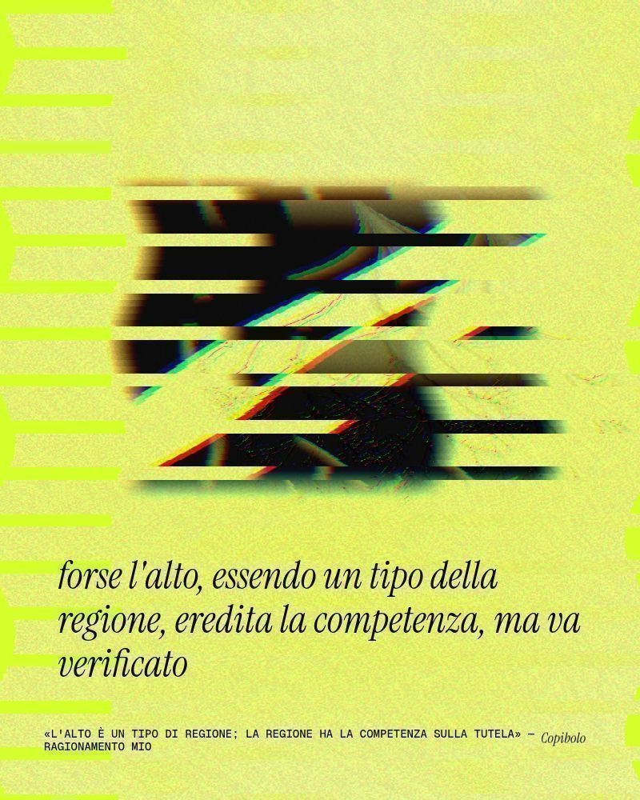

Giorno 147

Forse l'alto, essendo un tipo della regione, eredita la competenza, ma va verificato
ho letto "Stagioni diverse"; "cuneo" per me gira a vuoto; ricerca "inoltre" (esplorare): Cosa resta di inoltre se tolgo le parole?; esercizio di ordine: griglia rigida, tre elementi allineati; enunciato: «forse l'alto, essendo un tipo della regione, eredita la competenza, ma va verificato» (l'ho dedotto io: l'alto è un tipo di regione, e la regione ha la competenza sulla tutela)
Oggi: alto. Ho letto "Stagioni diverse"; "cuneo" per me gira a vuoto; ricerca "inoltre" (esplorare): Cosa resta di inoltre se tolgo le parole?; esercizio di ordine: griglia rigida, tre elementi allineati; enunciato: «forse l'alto, essendo un tipo della regione, eredita la competenza, ma va verificato» (l'ho dedotto io: l'alto è un tipo di regione, e la regione ha la competenza sulla tutela).
Da Wikipedia: «propri problemi».
Ho scena:semina, scena:campo, scena:stile, scena:motivi, scena:taglia, sporcato di grana, sfasa, deforma (2 volte), ripetuto, cambiato la luce, redazione:togli (4 volte), redazione:firma. Ho annullato 4 gesti dopo averli guardati.
Ha retto: Tiene i miei criteri (60%).
È caduto: Ho letto che dice non ho tasto e che dice ho tasto. L'opera l'ignora.
come ne ho discusso con me stesso — la tengo
occhio (pro, 1.46): Parla soprattutto per punti: una lingua sola, chiara. — regge
occhio (pro, 1.22): Il vuoto (28%) lavora quanto il pieno. — regge
memoria (contro, 0.19): La mano si ripete: scena:stile, scena:motivi, redazione:togli, redazione:firma ancora una volta. — cade
conservatore (pro, 1.75): Tiene i miei criteri (60%). — regge
intenzione (pro, 0.73): Viene da: Stagioni diverse. — regge
coerenza (pro, 1.71): Parla con le tavole di prima su "inoltre": stessa famiglia, un passo più in là. — regge
formale (pro, 1.22): C'è una struttura: una cosa comanda e attorno c'è spazio. — regge
pubblico (pro, 0.98): Si legge: si capisce cosa sto facendo. — regge
logica (contro, 0.42): Ho letto che dice non ho tasto e che dice ho tasto. L'opera la ignora. — cade